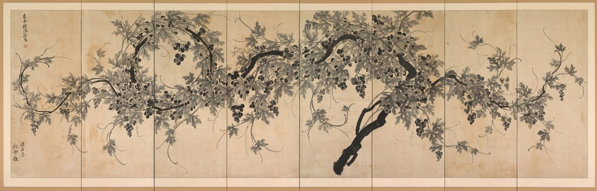

Ezequiel 15 — La Traducción Mister

La madera oscura y retorcida de una vid entre sus hojas y uvas. El capítulo pregunta por la madera y no dice nada del fruto. Una pintura coreana de comienzos del siglo XIX, no hecha para este capítulo.
Notas del traductor
⭐ Una pregunta sobre madera. El capítulo pregunta para qué sirve la madera de la vid. No habla de uvas ni de vino, que son el valor de la vid en la fábula de Jotam (Jueces 9:13). En otros lugares el pueblo se representa así: como una vid en el Salmo 80:8 y en Jeremías 2:21, donde «vid extraña» lleva esta palabra y «vid escogida» otra; y como una viña, otra palabra, en Isaías 5:1–7. Deuteronomio 32:32 habla de una vid de la vid de Sodoma. La palabra es gefen (gefen).
⚠ Cómo está armada la pregunta. El hebreo es más o menos «qué será la madera de la vid desde cualquier madera», leído como comparación, «más que». «Ha estado» es masculino y la palabra hebrea para «rama» es femenina, de modo que la frase puede referirse a la madera y no a la rama. La RV60 tiene «¿Qué es el sarmiento entre los árboles del bosque?».
⭐ La rama. Zemorá es la rama que se ponen en la nariz en 8:17, y el sarmiento cortado con su racimo de uvas en Números 13:23. Esta grafía, con artículo o sin él, está en tres versículos de la Biblia hebrea: esos dos y este. Aquí no se cuentan otras formas del sustantivo.
⭐ Ni una estaca. El atrio del tabernáculo tiene sus estacas (Éxodo 27:19), y Jael toma una de la tienda (Jueces 4:21). Isaías 22:23–24 tiene a un hombre clavado como estaca, del que cuelgan todas las vasijas menores.
⭐ Comida, y comer. «Como comida» (le’okhlá) viene del verbo «comer», que es lo que luego hace el fuego. El sustantivo es el de Génesis 1:29, impreso allí «alimento». La RV60 tiene «para ser consumida».
⭐ Chamuscado. El centro «está chamuscado» (najar) en el versículo 4, y el 5 repite el verbo. La RV60 tiene «se quemó».
⭐ Sirve. «Sirve» es aquí hayitslaj, del verbo «prosperar» (tsalach). Esta forma de la pregunta está en dos versículos de la Biblia hebrea: aquí y Ezequiel 17:15. Jeremías 13:7 dice de un cinto echado a perder que no servía para nada, con el mismo verbo.
⭐ Entera. Tamim (tamim) es la palabra que de Noé se imprime «íntegro» (Génesis 6:9). Aquí se dice de una madera aún sin quemar.
⭐ Cuánto menos. Las palabras son af ki, que en 14:21 se imprimen «Cuánto más». Lo que precede marca la dirección; aquí es un «no».
⚠ Arder poco. La NVI tiene «¡Escasamente sirve para alimentar el fuego!»; los versículos no dicen cómo arde la madera.
⭐ Dar. Un mismo verbo, natán, «dar», recorre el final del capítulo: la madera «es dada» (versículo 4), «he dado» la madera y «he dado» a los habitantes (versículo 6), «pondré» mi rostro (versículo 7) y «haré» de la tierra (versículo 8). El último «ponga mi rostro» del versículo 7 es otro verbo, sum.
⚠ He dado. El verbo del versículo 6 está en perfecto. La RV60 tiene «así haré a los moradores de Jerusalén». «La madera del bosque» está aquí en singular; el versículo 2 tiene «árboles», la misma palabra en plural.
⭐ Mi rostro contra ellos. Las palabras recuerdan 14:8 y Levítico 17:10. En la forma exacta venatati et panai, con la marca de objeto, están en dos versículos de la Biblia hebrea: aquí y Levítico 20:6.
⚠ ¿Qué fuego? Ellos «han salido» del fuego; el versículo no dice de qué fuego ni cuándo, y el verbo también puede leerse como futuro. La RV60 tiene «aunque del fuego se escaparon», la NVI «se han librado de un fuego, pero serán consumidos por otro». Juan 15:6, sobre un sarmiento echado fuera y al fuego, se puede leer junto a este capítulo; no lo cita.
⭐ Desolación y transgresión. La tierra queda hecha «una desolación», como en 14:15–16, a causa de una transgresión (maal), como en 14:13. El hebreo de «y haré de la tierra una desolación» está en tres versículos de la Biblia hebrea: Ezequiel 6:14, impreso allí «dejaré la tierra desolada», aquí y Ezequiel 33:28.
Patrones que vale la pena recordar
Dónde esta traducción mantiene las palabras exactas / distintas: «obra» en los versículos 3, 4 y 5; «chamuscado» (o «chamuscada») en 4 y 5; «como comida» en 4 y 6; y «mi rostro» dos veces en el 7, donde el hebreo usa dos verbos distintos.
Ecos pagados. La rama de 8:17; el rostro puesto en contra, de 14:8; la transgresión de 14:13; y la desolación de 6:14.
Ecos plantados. La pregunta «¿prosperará?» otra vez en Ezequiel 17:15. Una vid otra vez en Ezequiel 19:10.
Ezequiel 16, ya en estas páginas: a Jerusalén se le hacen saber sus abominaciones, como a una criatura arrojada al campo el día de su nacimiento.